wmtask_direct_sum_additive_p30_perareapcaautodim_cayley_nearid_tf__lc_x_obsnoisescale_sweep_20260430T071136Z__stage_aProject: WMTask_identity_encoder_verification
Launched: 2026-04-30T07:15:17Z
Completed: 2026-04-30T10:10:26Z
Outcome: complete_clean
Git: latent-JacobianODE @ b50b306
Expected runs: 21
wmtask_direct_sum_additive_p30_perareapcaautodim_cayley_nearid_tf__lc_x_obsnoisescale_sweepDescription
WMTask fully-observed (N1=N2=64), DirectSum encoder with per-area PCA-99% autodim AND learnable Cayley-orthogonal inter-layer mixers (use_cayley_perms=True). Each Cayley layer parameterises an orthogonal Q ∈ SO(n) via Q = (I - A)(I + A)^{-1} with A = U - U^T skew-symmetric. Initialised at U=0 → Q=I, so the encoder is bit-equivalent to the fixed-perms variant at init; gradient is then free to learn arbitrary inter-layer rotations. Same recipe as wmtask_direct_sum_additive_p30_perareapcaautodim_nearid_tf in every other respect.
Hypothesis
Standard FixedPermutation only allows axis-aligned mixing between coupling layers. For partial-obs / autodim setups the encoder must align the data's principal axes (NOT axis-aligned with the obs basis) with the first n_target_dims latent axes. With fixed permutations, the encoder achieves this only via the coupling-layer nonlinearity, which is a roundabout path. Learnable orthogonal mixers should let the encoder discover the right rotation directly. If Cayley closes the gap from val_traj~0.035 to ~<0.010 (closer to full-128's 0.0041), expressivity-of-mixing was the bottleneck. If not, the fundamental issue is elsewhere (PCA threshold, MLP capacity) and we'll bump threshold to 99.99% next.
Success criteria
Swept axes (4): data.postprocessing.generalized_variance, model.n_target_dims_per_block_pca_cum_var, training.lightning.loop_closure_weight, training.lightning.obs_noise_scale
Chosen run (by best_traj_loss): 883rn6yw — traj_loss=0.00498, MASE=0.6873, R²=0.9943, LC loss=15.988, epoch=18.0
Swept-axis values at chosen run: data.postprocessing.generalized_variance=0.00954705 · model.n_target_dims_per_block_pca_cum_var=[0.9904994838152053, 0.9915787192795026] · training.lightning.loop_closure_weight=1.0e-06 · training.lightning.obs_noise_scale=0
Runs analyzed: 21 (expected 21)
| run_idx | run_id | data.postprocessing.generalized_variance |
model.n_target_dims_per_block_pca_cum_var |
training.lightning.loop_closure_weight |
training.lightning.obs_noise_scale |
best_traj_loss | best_MASE | R² | LC loss | epoch |
|---|---|---|---|---|---|---|---|---|---|---|
| 3 | 883rn6yw |
0.00954705 | [0.9904994838152053, 0.9915787192795026] | 1.0e-06 | 0 | 0.00498 | 0.6873 | 0.9943 | 15.988 | 18.0 |
| 0 | 0ss7s6sr |
0.00954705 | [0.9904994838152053, 0.9915787192795026] | 0 | 0 | 0.00500 | 0.6880 | 0.9943 | 31.861 | 18.0 |
| 6 | 3qhuxkxj |
0.00954705 | [0.990499483815206, 0.9915787192795004] | 1.0e-05 | 0 | 0.00501 | 0.6889 | 0.9942 | 5.057 | 18.0 |
| 2 | yuss65ko |
0.00954705 | [0.9904994838152053, 0.9915787192795026] | 0 | 0.05 | 0.00506 | 0.6914 | 0.9942 | 42.747 | 19.0 |
| 5 | 9ncq1v2o |
0.00954705 | [0.990499483815206, 0.9915787192795004] | 1.0e-06 | 0.05 | 0.00509 | 0.6932 | 0.9942 | 22.253 | 19.0 |
| 1 | trp7h4fm |
0.00954705 | [0.9904994838152053, 0.9915787192795026] | 0 | 0.01 | 0.00521 | 0.6982 | 0.9940 | 33.947 | 19.0 |
| 4 | msxe2p3w |
0.00954705 | [0.990499483815206, 0.9915787192795004] | 1.0e-06 | 0.01 | 0.00521 | 0.6989 | 0.9940 | 17.338 | 19.0 |
| 7 | hb8ktudy |
0.00954705 | [0.990499483815206, 0.9915787192795004] | 1.0e-05 | 0.01 | 0.00527 | 0.7016 | 0.9940 | 5.476 | 19.0 |
| 8 | 75y1fubw |
0.00954705 | [0.990499483815206, 0.9915787192795004] | 1.0e-05 | 0.05 | 0.00527 | 0.7026 | 0.9940 | 6.464 | 16.0 |
| 9 | 9jxkbud4 |
0.00954705 | [0.990499483815206, 0.9915787192795004] | 1.0e-04 | 0 | 0.00534 | 0.7078 | 0.9939 | 1.004 | 18.0 |
| 10 | ni6t39bf |
0.00954705 | [0.990499483815206, 0.9915787192795004] | 1.0e-04 | 0.01 | 0.00558 | 0.7196 | 0.9936 | 1.111 | 19.0 |
| 11 | r4edwt6h |
0.00954705 | [0.990499483815206, 0.9915787192795004] | 1.0e-04 | 0.05 | 0.00561 | 0.7205 | 0.9936 | 1.300 | 18.0 |
| 12 | 6vqg89p7 |
0.00954705 | [0.990499483815206, 0.9915787192795004] | 0.001 | 0 | 0.00648 | 0.7700 | 0.9926 | 0.186 | 19.0 |
| 14 | 8mhoxrrr |
0.00954705 | [0.990499483815206, 0.9915787192795004] | 0.001 | 0.05 | 0.00683 | 0.7873 | 0.9922 | 0.268 | 19.0 |
| 13 | wmu07x6z |
0.00954705 | [0.990499483815206, 0.9915787192795004] | 0.001 | 0.01 | 0.00704 | 0.7969 | 0.9919 | 0.250 | 19.0 |
| 15 | 7cbkx0qa |
0.00954705 | [0.990499483815206, 0.9915787192795004] | 0.01 | 0 | 0.01049 | 0.9432 | 0.9880 | 0.028 | 19.0 |
| 18 | m65a48s8 |
0.00954705 | [0.990499483815206, 0.9915787192795004] | 0.1 | 0 | 0.01691 | 1.1742 | 0.9806 | 0.002 | 19.0 |
| 17 | bgihec7u |
0.00954705 | [0.990499483815206, 0.9915787192795004] | 0.01 | 0.05 | 0.05317 | 1.9200 | 0.9390 | 0.069 | 6.0 |
| 16 | vsjpvfhg |
0.00954705 | [0.990499483815206, 0.9915787192795004] | 0.01 | 0.01 | 0.05579 | 1.9803 | 0.9360 | 0.069 | 6.0 |
| 19 | 6zqxn4yc |
0.00954705 | [0.990499483815206, 0.9915787192795004] | 0.1 | 0.01 | 0.05981 | 2.1512 | 0.9314 | 0.021 | 19.0 |
| 20 | pt1x8pwb |
0.00954705 | [0.990499483815206, 0.9915787192795004] | 0.1 | 0.05 | 0.06088 | 2.1578 | 0.9303 | 0.016 | 19.0 |
obs_noise_scale| obs_noise_scale | Best LC weight | Best traj loss | MASE at best | R² | LC loss | epoch |
|---|---|---|---|---|---|---|
| 0.0 | 1.0e-06 | 0.00498 | 0.6873 | 0.9943 | 15.988 | 18.0 |
| 0.01 | 0.0e+00 | 0.00521 | 0.6982 | 0.9940 | 33.947 | 19.0 |
| 0.05 | 0.0e+00 | 0.00506 | 0.6914 | 0.9942 | 42.747 | 19.0 |
| Criterion | Verdict | Note |
|---|---|---|
| All 21 cells train without divergence | Unknown | |
| Cayley layer params (U) trained to non-zero (logged via state_dict snapshot) | Unknown | |
| Best val traj_loss within 2x of wmtask_direct_sum full-128's 0.00406 | Unknown | |
| Recon loss converges below 1.5% (vs ~2% with fixed perms) | Unknown | |
| es2-best.ckpt and es5-best.ckpt both saved per cell | Unknown |
Automated verdicts use simple numeric-threshold parsing and may mis-classify qualitative criteria. The Discussion section below takes precedence.
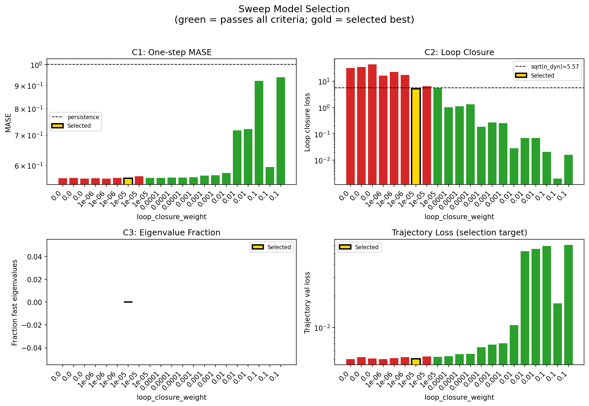
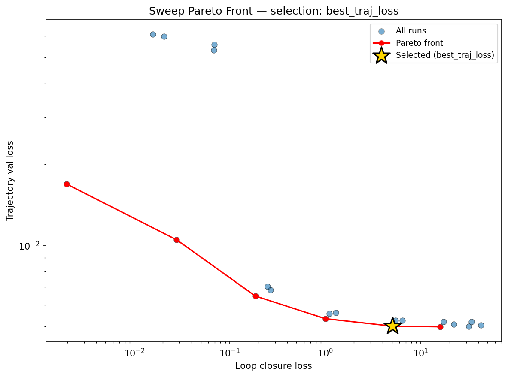
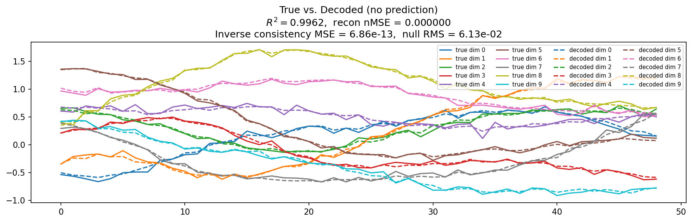
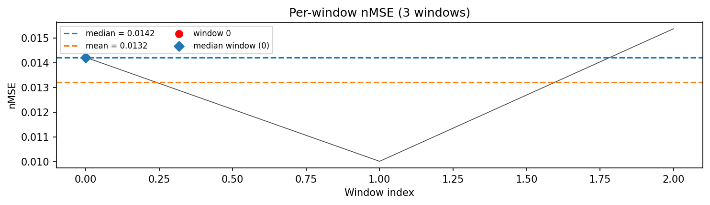
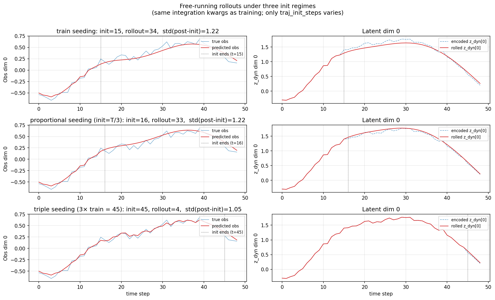
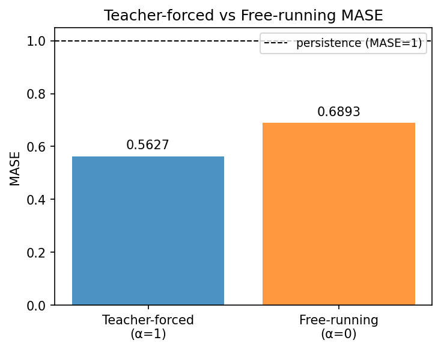
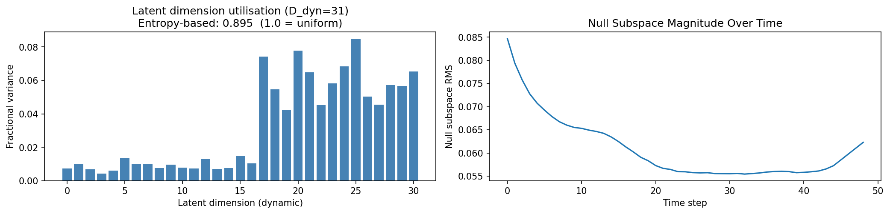
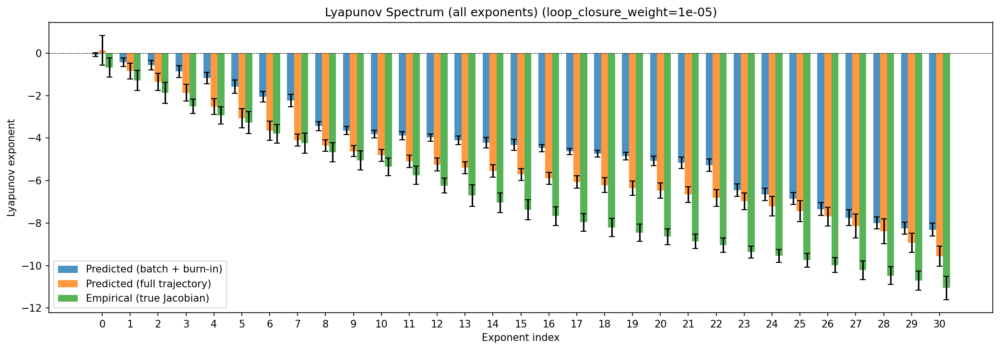
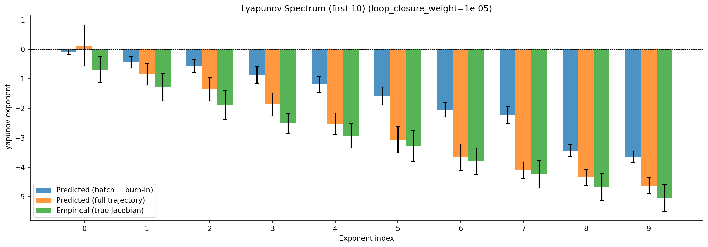
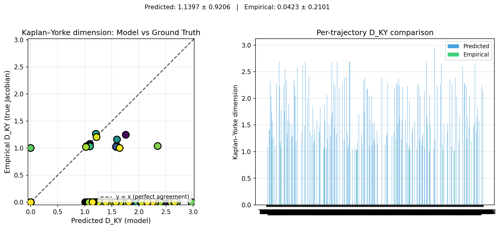
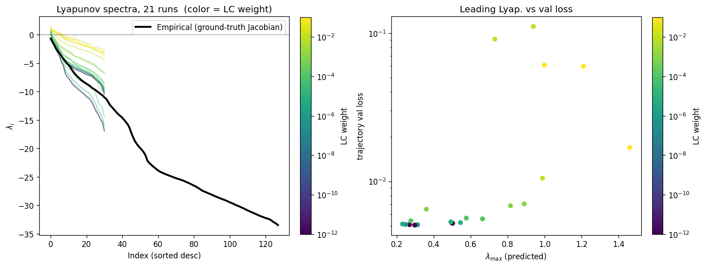
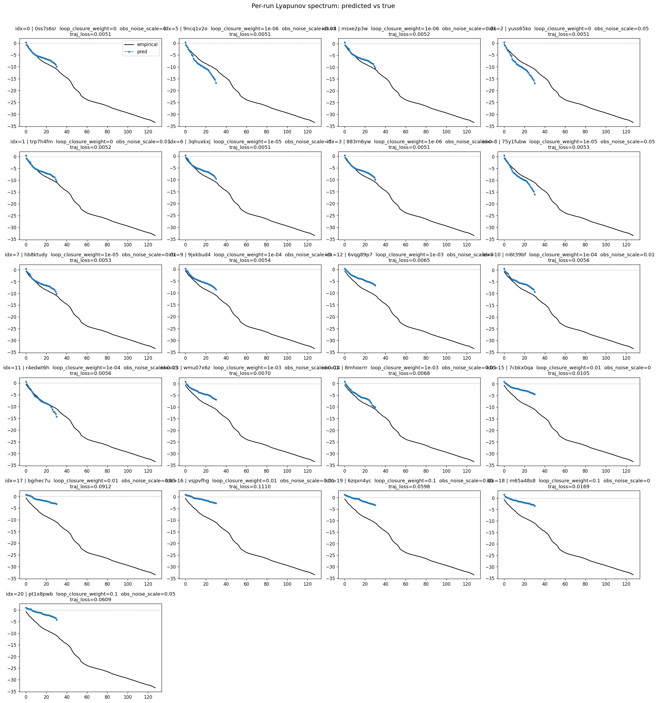
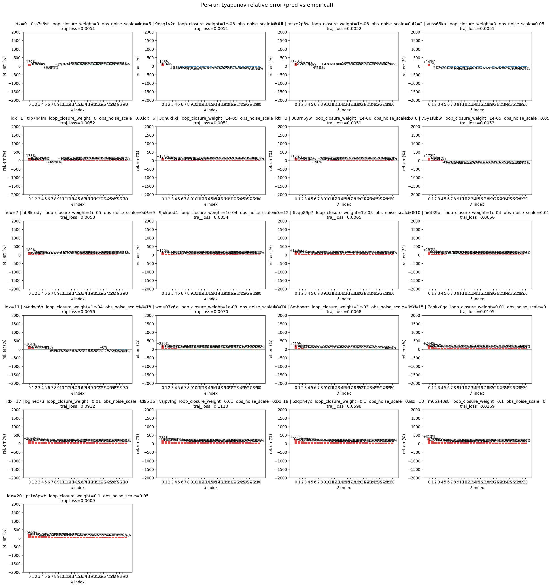
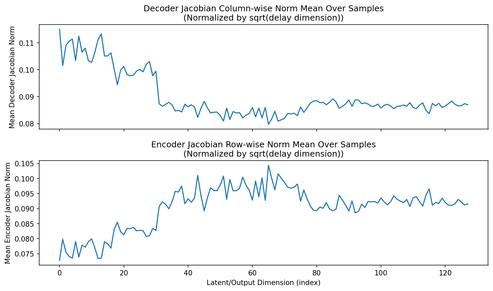
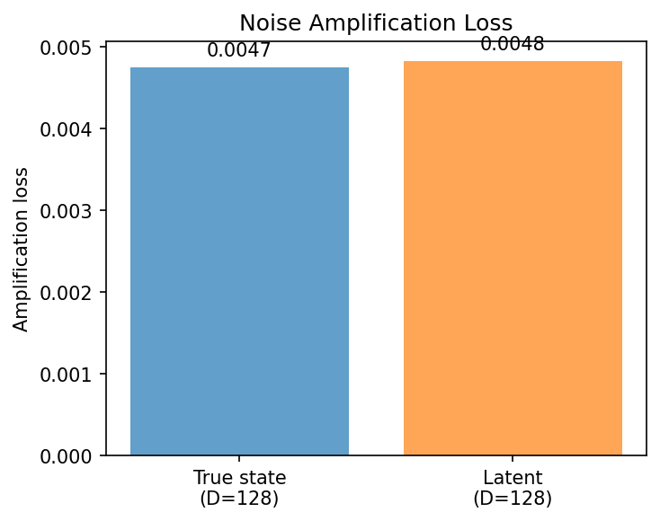
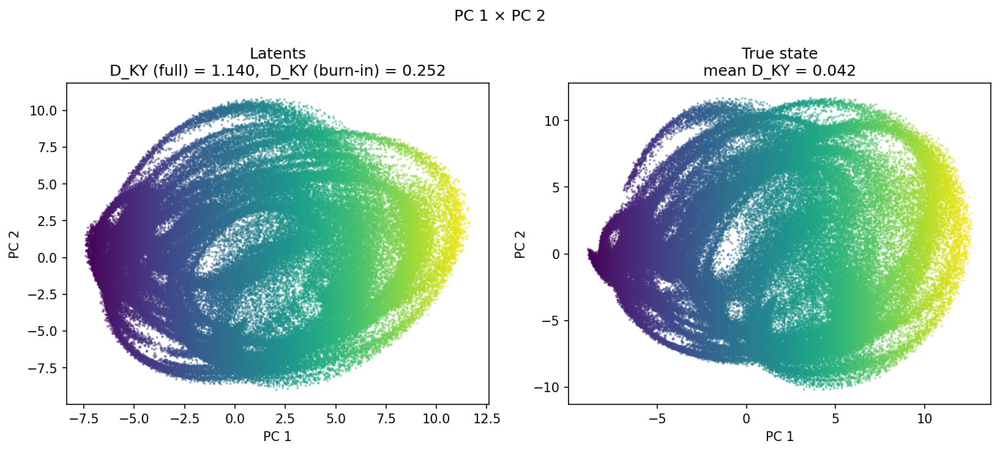
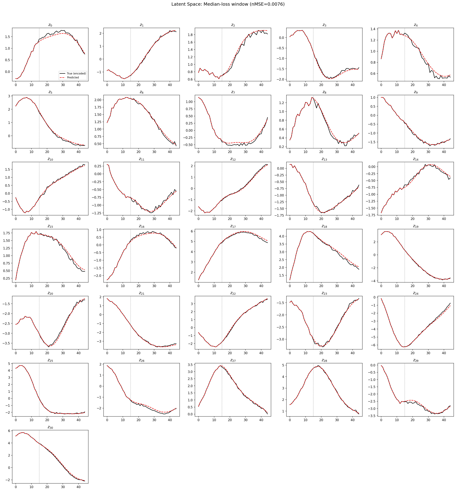
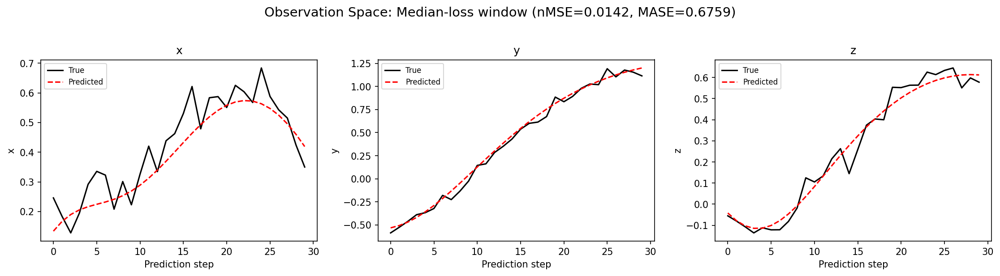
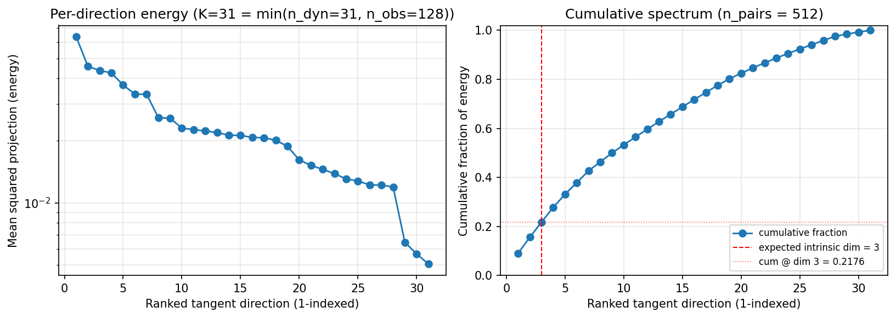
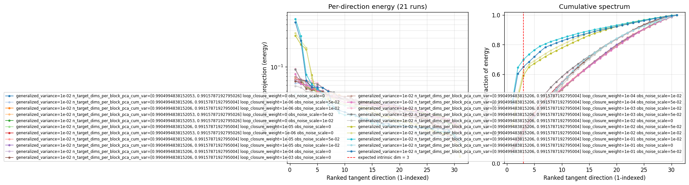
(to be written)
run_analytics stdoutrun_analyticsNo run_id provided — selecting best run from group 'wmtask_direct_sum_additive_p30_perareapcaautodim_cayley_nearid_tf__lc_x_obsnoisescale_sweep_20260430T071136Z__stage_a' ...
Found 21 total runs in JacobianODE/WMTask_identity_encoder_verification (group=wmtask_direct_sum_additive_p30_perareapcaautodim_cayley_nearid_tf__lc_x_obsnoisescale_sweep_20260430T071136Z__stage_a)
All runs (state, loop_closure_weight, tangent_entropy_weight, kl_dyn_weight):
0ss7s6sr: state=finished, lc=0.0, te=0.0, kl_dyn=0.0
9ncq1v2o: state=finished, lc=1e-06, te=0.0, kl_dyn=0.0
msxe2p3w: state=finished, lc=1e-06, te=0.0, kl_dyn=0.0
yuss65ko: state=finished, lc=0.0, te=0.0, kl_dyn=0.0
trp7h4fm: state=finished, lc=0.0, te=0.0, kl_dyn=0.0
3qhuxkxj: state=finished, lc=1e-05, te=0.0, kl_dyn=0.0
883rn6yw: state=finished, lc=1e-06, te=0.0, kl_dyn=0.0
75y1fubw: state=finished, lc=1e-05, te=0.0, kl_dyn=0.0
hb8ktudy: state=finished, lc=1e-05, te=0.0, kl_dyn=0.0
9jxkbud4: state=finished, lc=0.0001, te=0.0, kl_dyn=0.0
6vqg89p7: state=finished, lc=0.001, te=0.0, kl_dyn=0.0
ni6t39bf: state=finished, lc=0.0001, te=0.0, kl_dyn=0.0
r4edwt6h: state=finished, lc=0.0001, te=0.0, kl_dyn=0.0
wmu07x6z: state=finished, lc=0.001, te=0.0, kl_dyn=0.0
8mhoxrrr: state=finished, lc=0.001, te=0.0, kl_dyn=0.0
7cbkx0qa: state=finished, lc=0.01, te=0.0, kl_dyn=0.0
bgihec7u: state=finished, lc=0.01, te=0.0, kl_dyn=0.0
vsjpvfhg: state=finished, lc=0.01, te=0.0, kl_dyn=0.0
6zqxn4yc: state=finished, lc=0.1, te=0.0, kl_dyn=0.0
m65a48s8: state=finished, lc=0.1, te=0.0, kl_dyn=0.0
pt1x8pwb: state=finished, lc=0.1, te=0.0, kl_dyn=0.0
slurm_timeout_min not found in any run config — falling back to 180 min
Including 0ss7s6sr (lc=0.0): use_all_runs=True (state=finished)
Including 9ncq1v2o (lc=1e-06): use_all_runs=True (state=finished)
Including msxe2p3w (lc=1e-06): use_all_runs=True (state=finished)
Including yuss65ko (lc=0.0): use_all_runs=True (state=finished)
Including trp7h4fm (lc=0.0): use_all_runs=True (state=finished)
Including 3qhuxkxj (lc=1e-05): use_all_runs=True (state=finished)
Including 883rn6yw (lc=1e-06): use_all_runs=True (state=finished)
Including 75y1fubw (lc=1e-05): use_all_runs=True (state=finished)
Including hb8ktudy (lc=1e-05): use_all_runs=True (state=finished)
Including 9jxkbud4 (lc=0.0001): use_all_runs=True (state=finished)
Including 6vqg89p7 (lc=0.001): use_all_runs=True (state=finished)
Including ni6t39bf (lc=0.0001): use_all_runs=True (state=finished)
Including r4edwt6h (lc=0.0001): use_all_runs=True (state=finished)
Including wmu07x6z (lc=0.001): use_all_runs=True (state=finished)
Including 8mhoxrrr (lc=0.001): use_all_runs=True (state=finished)
Including 7cbkx0qa (lc=0.01): use_all_runs=True (state=finished)
Including bgihec7u (lc=0.01): use_all_runs=True (state=finished)
Including vsjpvfhg (lc=0.01): use_all_runs=True (state=finished)
Including 6zqxn4yc (lc=0.1): use_all_runs=True (state=finished)
Including m65a48s8 (lc=0.1): use_all_runs=True (state=finished)
Including pt1x8pwb (lc=0.1): use_all_runs=True (state=finished)
Found 21 effectively-done sweep runs:
loop_closure_weight=0.0, tangent_entropy_weight=0.0, kl_dyn_weight=0.0 -> run_id=0ss7s6sr
loop_closure_weight=0.0, tangent_entropy_weight=0.0, kl_dyn_weight=0.0 -> run_id=trp7h4fm
loop_closure_weight=0.0, tangent_entropy_weight=0.0, kl_dyn_weight=0.0 -> run_id=yuss65ko
loop_closure_weight=1e-06, tangent_entropy_weight=0.0, kl_dyn_weight=0.0 -> run_id=883rn6yw
loop_closure_weight=1e-06, tangent_entropy_weight=0.0, kl_dyn_weight=0.0 -> run_id=9ncq1v2o
loop_closure_weight=1e-06, tangent_entropy_weight=0.0, kl_dyn_weight=0.0 -> run_id=msxe2p3w
loop_closure_weight=1e-05, tangent_entropy_weight=0.0, kl_dyn_weight=0.0 -> run_id=3qhuxkxj
loop_closure_weight=1e-05, tangent_entropy_weight=0.0, kl_dyn_weight=0.0 -> run_id=75y1fubw
loop_closure_weight=1e-05, tangent_entropy_weight=0.0, kl_dyn_weight=0.0 -> run_id=hb8ktudy
loop_closure_weight=0.0001, tangent_entropy_weight=0.0, kl_dyn_weight=0.0 -> run_id=9jxkbud4
loop_closure_weight=0.0001, tangent_entropy_weight=0.0, kl_dyn_weight=0.0 -> run_id=ni6t39bf
loop_closure_weight=0.0001, tangent_entropy_weight=0.0, kl_dyn_weight=0.0 -> run_id=r4edwt6h
loop_closure_weight=0.001, tangent_entropy_weight=0.0, kl_dyn_weight=0.0 -> run_id=6vqg89p7
loop_closure_weight=0.001, tangent_entropy_weight=0.0, kl_dyn_weight=0.0 -> run_id=8mhoxrrr
loop_closure_weight=0.001, tangent_entropy_weight=0.0, kl_dyn_weight=0.0 -> run_id=wmu07x6z
loop_closure_weight=0.01, tangent_entropy_weight=0.0, kl_dyn_weight=0.0 -> run_id=7cbkx0qa
loop_closure_weight=0.01, tangent_entropy_weight=0.0, kl_dyn_weight=0.0 -> run_id=bgihec7u
loop_closure_weight=0.01, tangent_entropy_weight=0.0, kl_dyn_weight=0.0 -> run_id=vsjpvfhg
loop_closure_weight=0.1, tangent_entropy_weight=0.0, kl_dyn_weight=0.0 -> run_id=6zqxn4yc
loop_closure_weight=0.1, tangent_entropy_weight=0.0, kl_dyn_weight=0.0 -> run_id=m65a48s8
loop_closure_weight=0.1, tangent_entropy_weight=0.0, kl_dyn_weight=0.0 -> run_id=pt1x8pwb
loaded wmtask RNN model checkpoint 41
Loading cached wmtask hiddens from /orcd/data/ekmiller/001/eisenaj/ControlJacobians/WMTaskModels/WMSelectionTask__cue_time_0.1__response_time_0.25__enforce_fixation_False/BiologicalRNN__cue_time_0.1__learning_rate_0.0005__max_epochs_42__N1_64__N2_64__tau_0.05__dt_0.02__eig_lower_bound_0.1__init_mode_random/_jacobianode_cache/hiddens__all__epoch41__trials4096__seed42.pt
n_dims=128, n_latent=128, n_dyn=31, dt=0.0200
run=0ss7s6sr: DiagnosticMetrics(one_step_mase=0.5616582632064819, loop_closure_loss=31.860557556152344, fast_eigenvalue_fraction=0.0, trajectory_val_loss=0.005000191740691662) (from W&B history)
run=trp7h4fm: DiagnosticMetrics(one_step_mase=0.5628520250320435, loop_closure_loss=33.94696807861328, fast_eigenvalue_fraction=0.0, trajectory_val_loss=0.005206593312323093) (from W&B history)
run=yuss65ko: DiagnosticMetrics(one_step_mase=0.5606964826583862, loop_closure_loss=42.74726867675781, fast_eigenvalue_fraction=0.0, trajectory_val_loss=0.005063551478087902) (from W&B history)
run=883rn6yw: DiagnosticMetrics(one_step_mase=0.561652660369873, loop_closure_loss=15.988275527954102, fast_eigenvalue_fraction=0.0, trajectory_val_loss=0.004984624218195677) (from W&B history)
run=9ncq1v2o: DiagnosticMetrics(one_step_mase=0.5607131123542786, loop_closure_loss=22.252538681030273, fast_eigenvalue_fraction=0.0, trajectory_val_loss=0.005092893727123737) (from W&B history)
run=msxe2p3w: DiagnosticMetrics(one_step_mase=0.5628490447998047, loop_closure_loss=17.337970733642578, fast_eigenvalue_fraction=0.0, trajectory_val_loss=0.005214767064899206) (from W&B history)
run=3qhuxkxj: DiagnosticMetrics(one_step_mase=0.5619792342185974, loop_closure_loss=5.05697774887085, fast_eigenvalue_fraction=0.0, trajectory_val_loss=0.005011554807424545) (from W&B history)
run=75y1fubw: DiagnosticMetrics(one_step_mase=0.5677720308303833, loop_closure_loss=6.4639811515808105, fast_eigenvalue_fraction=0.0, trajectory_val_loss=0.005272200796753168) (from W&B history)
run=hb8ktudy: DiagnosticMetrics(one_step_mase=0.5628312826156616, loop_closure_loss=5.4756760597229, fast_eigenvalue_fraction=0.0, trajectory_val_loss=0.005266109481453896) (from W&B history)
run=9jxkbud4: DiagnosticMetrics(one_step_mase=0.5632203817367554, loop_closure_loss=1.0044777393341064, fast_eigenvalue_fraction=0.0, trajectory_val_loss=0.0053427089005708694) (from W&B history)
run=ni6t39bf: DiagnosticMetrics(one_step_mase=0.5636308193206787, loop_closure_loss=1.1105254888534546, fast_eigenvalue_fraction=0.0, trajectory_val_loss=0.005579274147748947) (from W&B history)
run=r4edwt6h: DiagnosticMetrics(one_step_mase=0.5638260245323181, loop_closure_loss=1.2996760606765747, fast_eigenvalue_fraction=0.0, trajectory_val_loss=0.005613152869045734) (from W&B history)
run=6vqg89p7: DiagnosticMetrics(one_step_mase=0.5649417042732239, loop_closure_loss=0.18578515946865082, fast_eigenvalue_fraction=0.0, trajectory_val_loss=0.00648396136239171) (from W&B history)
run=8mhoxrrr: DiagnosticMetrics(one_step_mase=0.5692247152328491, loop_closure_loss=0.2678469717502594, fast_eigenvalue_fraction=0.0, trajectory_val_loss=0.006833925843238831) (from W&B history)
run=wmu07x6z: DiagnosticMetrics(one_step_mase=0.5705971717834473, loop_closure_loss=0.2504790425300598, fast_eigenvalue_fraction=0.0, trajectory_val_loss=0.007038051262497902) (from W&B history)
run=7cbkx0qa: DiagnosticMetrics(one_step_mase=0.5768745541572571, loop_closure_loss=0.027846267446875572, fast_eigenvalue_fraction=0.0, trajectory_val_loss=0.010492132045328617) (from W&B history)
run=bgihec7u: DiagnosticMetrics(one_step_mase=0.7163068652153015, loop_closure_loss=0.06865058839321136, fast_eigenvalue_fraction=0.0, trajectory_val_loss=0.05317480117082596) (from W&B history)
run=vsjpvfhg: DiagnosticMetrics(one_step_mase=0.7207567095756531, loop_closure_loss=0.06932429224252701, fast_eigenvalue_fraction=0.0, trajectory_val_loss=0.055793166160583496) (from W&B history)
run=6zqxn4yc: DiagnosticMetrics(one_step_mase=0.9209561944007874, loop_closure_loss=0.02063584141433239, fast_eigenvalue_fraction=0.0, trajectory_val_loss=0.05980965122580528) (from W&B history)
run=m65a48s8: DiagnosticMetrics(one_step_mase=0.5953124165534973, loop_closure_loss=0.001962385606020689, fast_eigenvalue_fraction=0.0, trajectory_val_loss=0.016911806538701057) (from W&B history)
run=pt1x8pwb: DiagnosticMetrics(one_step_mase=0.9380993247032166, loop_closure_loss=0.01570245809853077, fast_eigenvalue_fraction=0.0, trajectory_val_loss=0.060879405587911606) (from W&B history)
Ranking method: best_traj_loss
Best run ID: 3qhuxkxj
Best loop_closure_weight: 1e-05
Best tangent_entropy_weight: 0.0
Best kl_dyn_weight: 0.0
Best traj loss: 0.005012
Criteria applied: ['C1', 'C2', 'C3']
Surviving: 14 / 21
Auto-selected run_id: 3qhuxkxj
======================================================================
PARETO FRONTIER RUNS (6 runs)
======================================================================
Run ID LC Loss Traj Val Loss
------------ -------------- --------------
m65a48s8 0.001962 0.016912
7cbkx0qa 0.027846 0.010492
6vqg89p7 0.185785 0.006484
9jxkbud4 1.004478 0.005343
3qhuxkxj 5.056978 0.005012 <-- selected
883rn6yw 15.988276 0.004985
======================================================================
RANKING METHOD COMPARISON (over 14 survivors)
======================================================================
Method Run ID LC Loss Traj Val Loss
---------------------- ------------ -------------- --------------
best_traj_loss 3qhuxkxj 5.056978 0.005012 <-- active
pareto_knee 9jxkbud4 1.004478 0.005343
geo_rank m65a48s8 0.001962 0.016912
minimax_rank 6vqg89p7 0.185785 0.006484
geo_log_score 3qhuxkxj 5.056978 0.005012
minimax_log_score 7cbkx0qa 0.027846 0.010492
======================================================================
Loading run 3qhuxkxj from JacobianODE/WMTask_identity_encoder_verification ...
loaded wmtask RNN model checkpoint 41
Loading cached wmtask hiddens from /orcd/data/ekmiller/001/eisenaj/ControlJacobians/WMTaskModels/WMSelectionTask__cue_time_0.1__response_time_0.25__enforce_fixation_False/BiologicalRNN__cue_time_0.1__learning_rate_0.0005__max_epochs_42__N1_64__N2_64__tau_0.05__dt_0.02__eig_lower_bound_0.1__init_mode_random/_jacobianode_cache/hiddens__all__epoch41__trials4096__seed42.pt
Loading checkpoint epoch=18-step=2375.ckpt...
Train dataset shape: torch.Size([11468, 45, 128])
Validation dataset shape: torch.Size([3280, 45, 128])
Test dataset shape: torch.Size([1636, 45, 128])
Train trajectories dataset shape: torch.Size([2867, 49, 128])
Validation trajectories dataset shape: torch.Size([820, 49, 128])
Test trajectories dataset shape: torch.Size([409, 49, 128])
Loading checkpoint epoch=18-step=2375.ckpt...
Computing reconstruction ...
Computing MASE ...
Teacher-forced MASE: 0.5627
Free-running MASE: 0.6893
Computing latent utilization ...
Entropy-based utilization: 0.895
Null subspace mean RMS: 6.128221e-02
Computing Lyapunov exponents ...
Computing full-trajectory Lyapunov (409 test trajs, T=49) ...
Predicted Lyapunov exponents (batch+burn-in, 128 windowed trajs):
λ_1 = -0.0792 ± 0.0894
λ_2 = -0.4319 ± 0.1989
λ_3 = -0.5669 ± 0.2161
λ_4 = -0.8688 ± 0.2858
λ_5 = -1.1827 ± 0.2675
λ_6 = -1.5812 ± 0.3111
λ_7 = -2.0489 ± 0.2424
λ_8 = -2.2317 ± 0.2896
λ_9 = -3.4363 ± 0.2095
λ_10 = -3.6492 ± 0.1960
λ_11 = -3.8127 ± 0.1847
λ_12 = -3.8897 ± 0.1849
λ_13 = -3.9768 ± 0.1734
λ_14 = -4.1050 ± 0.1991
λ_15 = -4.2156 ± 0.2431
λ_16 = -4.3215 ± 0.2518
λ_17 = -4.4714 ± 0.1751
λ_18 = -4.6282 ± 0.1426
λ_19 = -4.7341 ± 0.1547
λ_20 = -4.8553 ± 0.1818
λ_21 = -5.0676 ± 0.2298
λ_22 = -5.1661 ± 0.2755
λ_23 = -5.2770 ± 0.2998
λ_24 = -6.4504 ± 0.2924
λ_25 = -6.6471 ± 0.2917
λ_26 = -6.8454 ± 0.2828
λ_27 = -7.3436 ± 0.3044
λ_28 = -7.7465 ± 0.3670
λ_29 = -8.0006 ± 0.2799
λ_30 = -8.2430 ± 0.2783
λ_31 = -8.3093 ± 0.2961
Predicted Lyapunov exponents (full-length, 409 test trajs):
λ_1 = +0.1344 ± 0.6935
λ_2 = -0.8459 ± 0.3717
λ_3 = -1.3540 ± 0.4036
λ_4 = -1.8632 ± 0.3890
λ_5 = -2.5259 ± 0.3703
λ_6 = -3.0724 ± 0.4460
λ_7 = -3.6567 ± 0.4486
λ_8 = -4.1024 ± 0.2797
λ_9 = -4.3501 ± 0.2692
λ_10 = -4.6211 ± 0.2602
λ_11 = -4.8074 ± 0.2816
λ_12 = -5.1018 ± 0.2971
λ_13 = -5.2490 ± 0.2995
λ_14 = -5.3997 ± 0.2845
λ_15 = -5.5443 ± 0.2857
λ_16 = -5.7148 ± 0.2786
λ_17 = -5.8895 ± 0.2845
λ_18 = -6.0668 ± 0.2981
λ_19 = -6.2162 ± 0.3515
λ_20 = -6.3512 ± 0.3420
λ_21 = -6.4694 ± 0.3618
λ_22 = -6.6563 ± 0.3743
λ_23 = -6.8117 ± 0.3962
λ_24 = -6.9698 ± 0.3927
λ_25 = -7.2062 ± 0.4663
λ_26 = -7.4369 ± 0.4903
λ_27 = -7.6937 ± 0.4413
λ_28 = -8.1363 ± 0.5622
λ_29 = -8.3863 ± 0.5822
λ_30 = -8.9231 ± 0.4452
λ_31 = -9.5606 ± 0.4667
Empirical Lyapunov exponents (mean ± std):
λ_1 = -0.6836 ± 0.4470
λ_2 = -1.2860 ± 0.4717
λ_3 = -1.8796 ± 0.4983
λ_4 = -2.5140 ± 0.3383
λ_5 = -2.9329 ± 0.4143
λ_6 = -3.2778 ± 0.5212
λ_7 = -3.7948 ± 0.4446
λ_8 = -4.2351 ± 0.4668
λ_9 = -4.6672 ± 0.4583
λ_10 = -5.0458 ± 0.4531
λ_11 = -5.3534 ± 0.4185
λ_12 = -5.7506 ± 0.4346
λ_13 = -6.2355 ± 0.3491
λ_14 = -6.7043 ± 0.5036
λ_15 = -7.0414 ± 0.4554
λ_16 = -7.3719 ± 0.4648
λ_17 = -7.6725 ± 0.4415
λ_18 = -7.9667 ± 0.4130
λ_19 = -8.2155 ± 0.4290
λ_20 = -8.4474 ± 0.4083
λ_21 = -8.6400 ± 0.3667
λ_22 = -8.8546 ± 0.3395
λ_23 = -9.0471 ± 0.3366
λ_24 = -9.3642 ± 0.2863
λ_25 = -9.5403 ± 0.3009
λ_26 = -9.7473 ± 0.3189
λ_27 = -9.9780 ± 0.3514
λ_28 = -10.2177 ± 0.4331
λ_29 = -10.4760 ± 0.4197
λ_30 = -10.6968 ± 0.4504
λ_31 = -11.0538 ± 0.5425
λ_32 = -11.3182 ± 0.5459
λ_33 = -11.7806 ± 0.6071
λ_34 = -12.3300 ± 0.5244
λ_35 = -12.6464 ± 0.5369
λ_36 = -13.0198 ± 0.6314
λ_37 = -13.3795 ± 0.7073
λ_38 = -13.7502 ± 0.7660
λ_39 = -14.0682 ± 0.7579
λ_40 = -14.3279 ± 0.7619
λ_41 = -14.6206 ± 0.8778
λ_42 = -15.0213 ± 0.8116
λ_43 = -15.3487 ± 0.8488
λ_44 = -15.7679 ± 0.8512
λ_45 = -16.3535 ± 0.8105
λ_46 = -17.2371 ± 0.8420
λ_47 = -18.0172 ± 0.6551
λ_48 = -18.7348 ± 0.4352
λ_49 = -19.1920 ± 0.4388
λ_50 = -19.6032 ± 0.3862
λ_51 = -19.9849 ± 0.4171
λ_52 = -20.2854 ± 0.3677
λ_53 = -20.7129 ± 0.4088
λ_54 = -21.2293 ± 0.4493
λ_55 = -22.1518 ± 0.3711
λ_56 = -22.5100 ± 0.3571
λ_57 = -22.8264 ± 0.3133
λ_58 = -23.1069 ± 0.3495
λ_59 = -23.3589 ± 0.3337
λ_60 = -23.6276 ± 0.2926
λ_61 = -23.8603 ± 0.3155
λ_62 = -24.0618 ± 0.3005
λ_63 = -24.2152 ± 0.3129
λ_64 = -24.3396 ± 0.3136
λ_65 = -24.4895 ± 0.3210
λ_66 = -24.6115 ± 0.3197
λ_67 = -24.7359 ± 0.3269
λ_68 = -24.8561 ± 0.3392
λ_69 = -24.9753 ± 0.3426
λ_70 = -25.1117 ± 0.3497
λ_71 = -25.2226 ± 0.3734
λ_72 = -25.3357 ± 0.4009
λ_73 = -25.4353 ± 0.4172
λ_74 = -25.5439 ± 0.4046
λ_75 = -25.6332 ± 0.4116
λ_76 = -25.7832 ± 0.4585
λ_77 = -25.9142 ± 0.4799
λ_78 = -26.0449 ± 0.4990
λ_79 = -26.1810 ± 0.5037
λ_80 = -26.3617 ± 0.4899
λ_81 = -26.5171 ± 0.4864
λ_82 = -26.6628 ± 0.4753
λ_83 = -26.8617 ± 0.4795
λ_84 = -27.0282 ± 0.5036
λ_85 = -27.2607 ± 0.4846
λ_86 = -27.4529 ± 0.4854
λ_87 = -27.5733 ± 0.4725
λ_88 = -27.7187 ± 0.4967
λ_89 = -27.8617 ± 0.5003
λ_90 = -27.9895 ± 0.4903
λ_91 = -28.1274 ± 0.4923
λ_92 = -28.2824 ± 0.4913
λ_93 = -28.4072 ± 0.4914
λ_94 = -28.5255 ± 0.4695
λ_95 = -28.6477 ± 0.4521
λ_96 = -28.7842 ± 0.4453
λ_97 = -28.9001 ± 0.4403
λ_98 = -29.0308 ± 0.4330
λ_99 = -29.1511 ± 0.4295
λ_100 = -29.2954 ± 0.4247
λ_101 = -29.4503 ± 0.4217
λ_102 = -29.5753 ± 0.4321
λ_103 = -29.6956 ± 0.4539
λ_104 = -29.8547 ± 0.4485
λ_105 = -29.9992 ± 0.4490
λ_106 = -30.1172 ± 0.4378
λ_107 = -30.2615 ± 0.4426
λ_108 = -30.4062 ± 0.3980
λ_109 = -30.5554 ± 0.4003
λ_110 = -30.7032 ± 0.3985
λ_111 = -30.8743 ± 0.4228
λ_112 = -31.0109 ± 0.4336
λ_113 = -31.1492 ± 0.4292
λ_114 = -31.3023 ± 0.3981
λ_115 = -31.4396 ± 0.4097
λ_116 = -31.5685 ± 0.3902
λ_117 = -31.7302 ± 0.3526
λ_118 = -31.8705 ± 0.3050
λ_119 = -31.9948 ± 0.3040
λ_120 = -32.0998 ± 0.2813
λ_121 = -32.2401 ± 0.2718
λ_122 = -32.3221 ± 0.2617
λ_123 = -32.4282 ± 0.2531
λ_124 = -32.5858 ± 0.2272
λ_125 = -32.8296 ± 0.2629
λ_126 = -33.0206 ± 0.2244
λ_127 = -33.2132 ± 0.2160
λ_128 = -33.4614 ± 0.3541
Mean KY dim (predicted): 1.140 ± 0.921
Mean KY dim (empirical): 0.042 ± 0.210
Mean KY dim (burn-in): 0.252 ± 0.529
Computing prediction windows ...
Windows: 3 — nMSE min=0.0100, median=0.0142, mean=0.0132, max=0.0154
Computing long-trajectory free-running rollouts ...
Computing encoder/decoder Jacobians ...
encoder_jacobian: (128, 128, 128)
decoder_jacobian: (128, 128, 128)
Computing amplification loss ...
Amplification loss — True state: 0.004748
Amplification loss — Latent: 0.004828
Computing tangent space spectrum ...